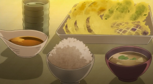

Tempura Recipes

Description
Okay, so you made some delicious tempura…. now, how should you eat it? Sure, you could have it over soup noodles or rolled up in a maki, but if you want to make the tempura the star of your meal (and not the noodles!), dipping your crispy deep fried creations in a simple sauce is definitely the best way to bring out the flavour of all your hard work!
Ingredients
- 3/4 cup dashi stock (or, kombu dashi for vegetarians)
- 3 tbsp Japanese soy sauce
- 2 tbsp mirin
- 2 tsp sugar
- 2 inch piece of daikon (or more), peeled
Steps
- Place dashi, soy sauce, mirin and sugar in a small saucepan. On low heat, bring to simmer and cook until the sugar has dissolved. Remove from heat and set aside until cool.
- Just before serving, finely grate daikon using the small holes on a grater or a microplane. Squeeze the water from the grated daikon
- Serve at room temperature or slightly warmed as a dipping sauce for tempura. Place sauce in small bowls and add grated daikon to taste.